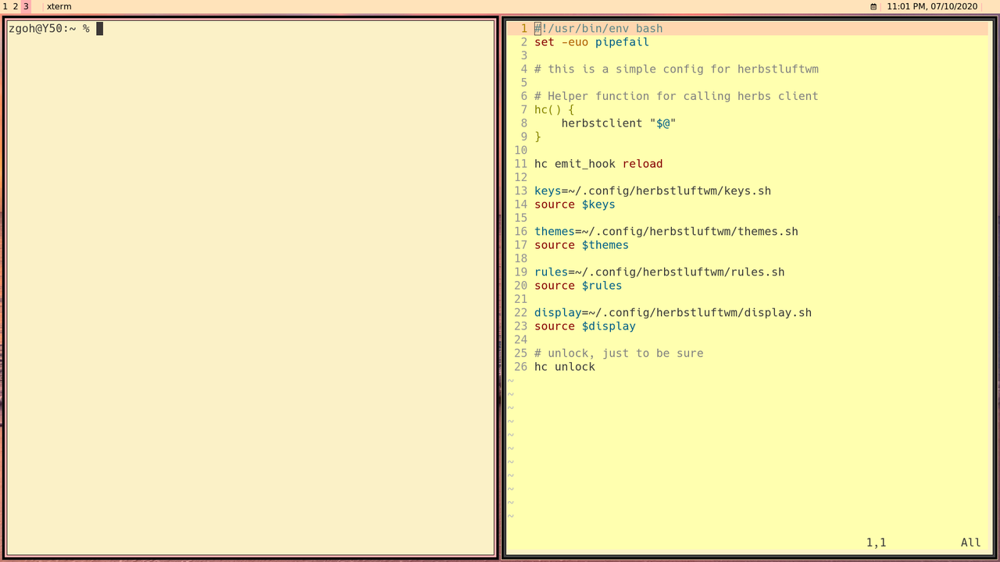

Trying out a new light theme
Recently I came across an article by Brent. In the article, he talks about how light themes are better and easier on the eyes. So here I am I created a light theme for my blog, I just switched the colors of background and foreground of the old palette (I got from Lospec).
In addition, the blog is not the only thing getting a new face lift. I have decided to use the light theme (gruvbox) on my desktop environment, xterm as well as my neovim.
Here is what my new desktop looks like now.
Which I like very much right now. I am currently using Herbstluftwm as my tiling manager and dzen2 as my statusbar.